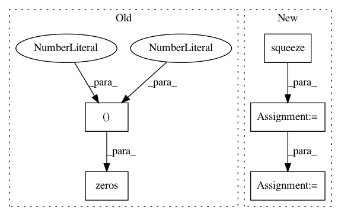

44d6b1ee73343ca7e4e9dd3ead5ec1cf8265b47c,examples/loss_and_gradient_so3.py,,grad,#Any#Any#Any#Any#,26
Before Change
grad = lie_group.grad(y_pred, y_true, SO3, metric)
if representation == "quaternion":
differential = gs.zeros((1, 6, 7))
differential = gs.zeros((1, 3, 4))
quat_scalar = y_pred[:, :1]
quat_vec = y_pred[:, 1:]
After Change
* (gs.einsum("ni,nj->nij", quat_vec, quat_vec)
/ quat_vec_norm ** 2)
+ 2 * quat_arctan2 / quat_vec_norm * gs.eye(3))
differential_vec = gs.squeeze(differential_vec)
differential = gs.concatenate(
[differential_scalar, differential_vec],
axis=1)
y_pred = SO3.rotation_vector_from_quaternion(y_pred)
y_true = SO3.rotation_vector_from_quaternion(y_true)
In pattern: SUPERPATTERN
Frequency: 3
Non-data size: 5
Instances
Project Name: geomstats/geomstats
Commit Name: 44d6b1ee73343ca7e4e9dd3ead5ec1cf8265b47c
Time: 2018-12-30
Author: ninamio78@gmail.com
File Name: examples/loss_and_gradient_so3.py
Class Name:
Method Name: grad
Project Name: broadinstitute/keras-rcnn
Commit Name: eb4732369125efb8c9c87ad79544e99c1aa3b67e
Time: 2019-04-30
Author: allen.goodman@icloud.com
File Name: keras_rcnn/applications/_jhung2019.py
Class Name: JHung2019
Method Name: predict
Project Name: geomstats/geomstats
Commit Name: ef36b82652b3494753d5c6b8a974c0b978b310a0
Time: 2018-12-28
Author: ninamio78@gmail.com
File Name: examples/loss_and_gradient_so3.py
Class Name:
Method Name: grad